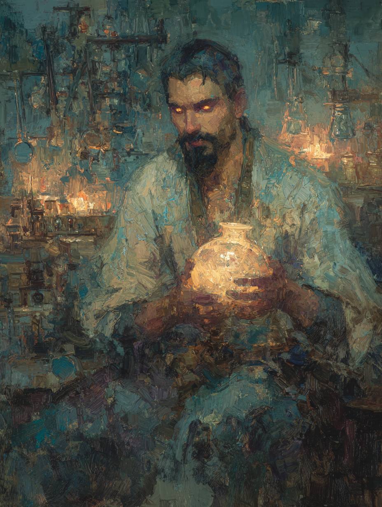

Nadir the Tormented
Glassblower of the Golden Horn · Djinnpossessed Origin

Persian · Aged Thirty-Six
On the Subject
A once-brilliant glassblower whose craft was interrupted by a pact he did not agree to. Tricked by a djinn who promised to grant his wishes — but who, in truth, came only to make Nadir grant his — Nadir now shares his body with the thing that deceived him.
His glasswork has never been finer; the vessels he blows shimmer with otherworldly brilliance, and the wealthy of Constantinople pay handsomely for them. But his hands tremble more each year, his skin has begun to crack like cooling crystal, and at night he hears voices in a tongue he has been forced to learn. He came to this city believing he could find a way to be free of the thing inside him. He has not, yet.
Faculties & Saving Throws
Base array 13, 13, 10, 9, 9, 7; Human +1 to each
Bearing in the Field
Skills
| Skill | Bonus | Source |
|---|---|---|
| Arcana | +2 | Sorcerer |
| Deception | +4 | Sorcerer |
| Insight | +2 | Guild Artisan |
| Performance | +4 | Human |
| Persuasion | +4 | Guild Artisan |
Tool proficiency: glassblower's tools (Guild Artisan).
Class Features
Convert (bonus action):
- Spell slot → sorcery points: 1st slot = 2 pts, 2nd slot = 3 pts
- Sorcery points → spell slot: 2 pts = 1st slot, 3 pts = 2nd slot
By touching a creature and expending a 1st-level spell slot only, force a save vs DC 12. On a failure, Nadir chooses one of three afflictions for the target:
Only 1st-level slots may be spent on this ability.
Also: knows Djinnspeak.
Always knows hellish rebuke and unseen servant as additional Sorcerer spells. Do not count against spells known. Always available.
If the djinn is ever exorcised through the Exorcism Sacrament, Nadir would be reborn as a Djinnmaster Warlock with the djinn as patron. Each level of Sorcerer raises the Exorcism Difficulty by 1.
Spells
4 spells known, plus 2 always-known from Djinnpossessed; 5 cantrips (4 Sorcerer + 1 feat)
- Fire Bolt
- Prestidigitation
- Minor Illusion
- Chill Touch
- Vicious Mockery — Djinn's Foul Touch feat
Fire Bolt: superheated glass at his fingertips. Prestidigitation: a glassblower's pocket-tool. Vicious Mockery: sometimes the words slip out in a voice that isn't his.
| Lvl | Spell | Notes |
|---|---|---|
| 1st | shield | Reaction; +5 AC until next turn — critical given AC 10 |
| 1st | charm person | Wis save DC 12; charm humanoid for 1 hour |
| 1st | burning hands | 15 ft cone, 3d6 fire; flavor from his trade |
| 2nd | mirror image | Three illusory duplicates; near-essential survival tool |
| 1st | hellish rebuke | Djinnpossessed always-known; reaction; 2d10 fire on Dex save fail |
| 1st | unseen servant | Djinnpossessed always-known; ritual |
Feat
- Learns the vicious mockery cantrip.
- Can cast bestow curse 1/day without expending a spell slot. Refreshes on long rest.
Background — Guild Artisan (Glassblower)
The Constantinople glassblowers' guild provides lodging and food in cities with a chapter; fellow guild members will assist Nadir with reasonable requests; legal aid in commercial disputes; political voice in his trade. In return, he is expected to pay guild dues (5 gp/month) and represent the guild's interests.
Equipment
- Hanchar × 2 — dagger stats: 1d4 piercing, finesse, light, thrown 20/60; +2 to hit / 1d4 +0 damage
- Light crossbow + 20 bolts — 1d8 piercing, range 80/320; +2 to hit / 1d8 +0 damage
- None — Sorcerers have no armor proficiency; relies on shield, mirror image, and staying back from the line
- Glassblower's tools — Guild Artisan; full kit fits in a leather case
- Letter of introduction from his guild
- Traveler's clothes
- Belt pouch
- Identification papers — stamped with the seal of the Constantinople glassblowers' guild
- Furnace and workshop — in the artisan quarter near the Golden Horn
Personality
I speak softly and never finish a sentence the same way twice — I am never quite sure who is speaking, me or the other.
No man should be a vessel for another's will. Not even mine.
Somewhere in this city is the means to expel the thing inside me. I will find it, or die trying. Both outcomes have their appeal.
My body is failing. I know I have years, perhaps less. I take risks a healthier man would not — because what is there to lose?
Connections
- Secretly exchanged notes on djinn-related phenomena with Selim the Bound.
- Reluctantly partnered with Miriam the Chronicler to create a protective artifact.
His glassmaking expertise could help analyze and recover fragile artifacts.
Osman Hamdi Bey may or may not know about the djinn.